| Pictures | ||||
| Home | Research | Pictures | Teaching | |
|
Here (click the image for a higher-res version) is a picture of a branching Brownian motion in one dimension (the x-axis represents time, and each particle is a different colour): Drawing discrete trees in a useful way is tricky, as the number of possible leaves in each generation increases exponentially. Here are a couple of attempts at drawing a random binary search tree (random quicksort) with 20,000 insertions. Colour represents age (red means the node was added early on, blue late). Click for higher-res.
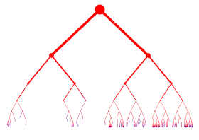 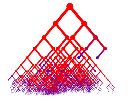 And for even higher res, click below, but beware, it's 2.5mb.
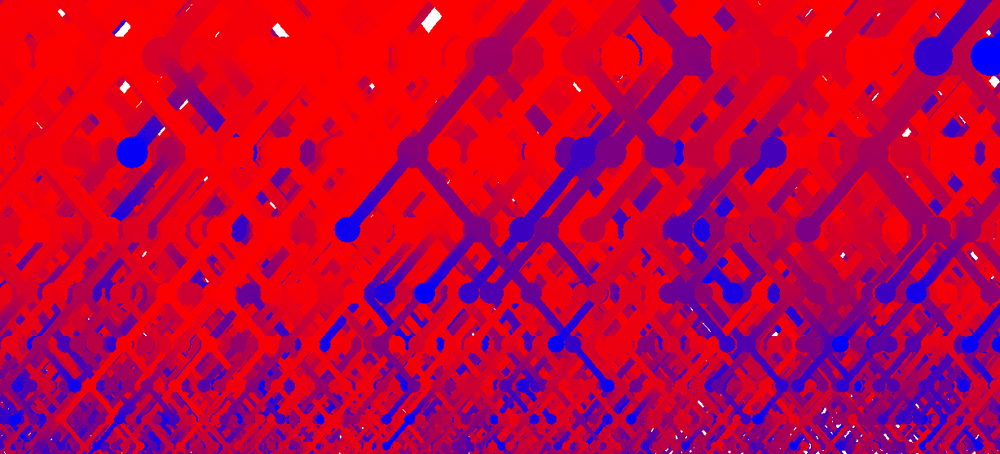 One interesting quantity in the random binary search tree is the number of leaves at the top-most level of the tree (called the "fringe" in the article mentioned above). The picture below shows this quantity (thick blue line) together with the number at the next level down (thin red line) and the level below that (dashed green line). You can see the picture in higher resulotion by clicking on it. The horizontal axis represents time, and the vertical axis is the number of particles present.
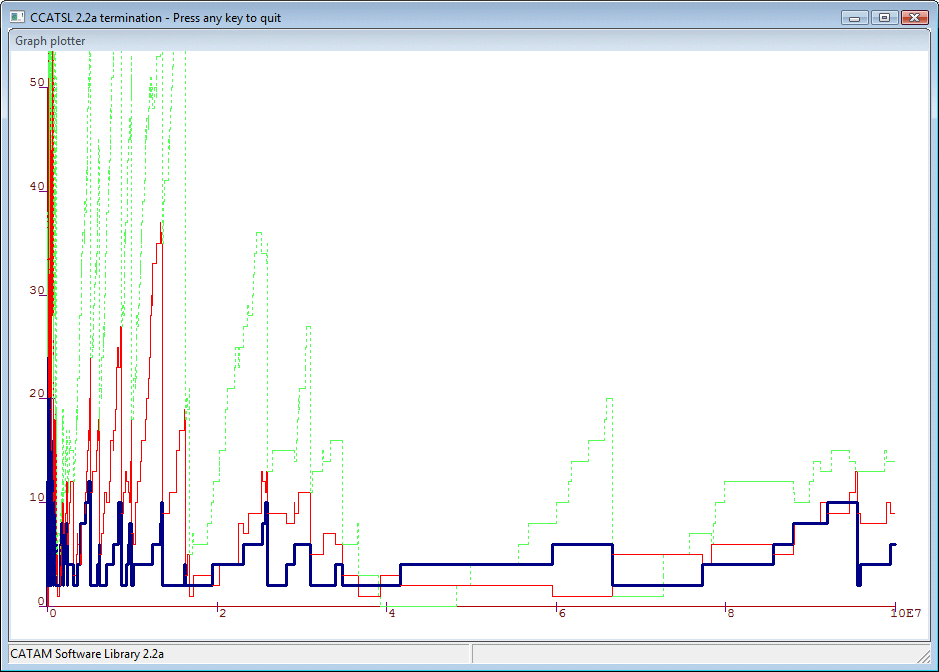 I also drew some prettier, but less useful, pictures of the BST. Below, the top level (the fringe) is orange/red, the level below that is blue/purple, and the third level is green - and it was run over a much shorter time-scale. Again, click the image for the full-sized version.
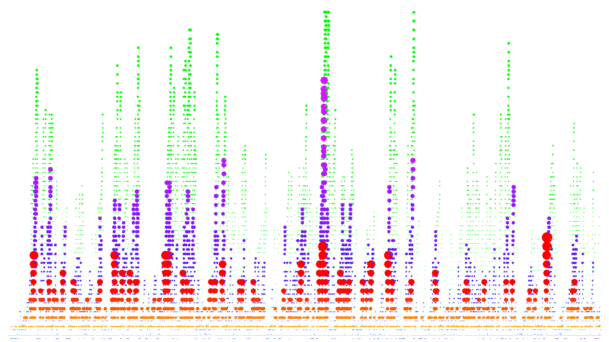
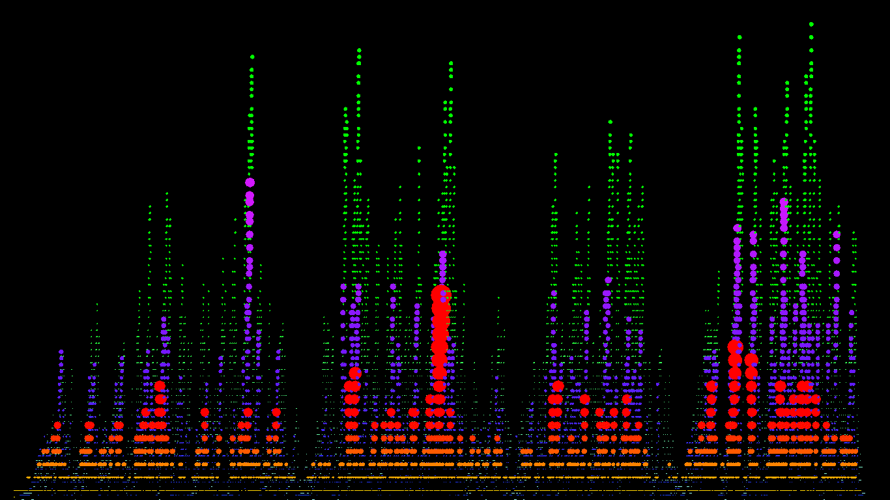 The following picture is from a simulation of a model that I worked on with Marcel Ortgiese, the branching random walk in Pareto environment.
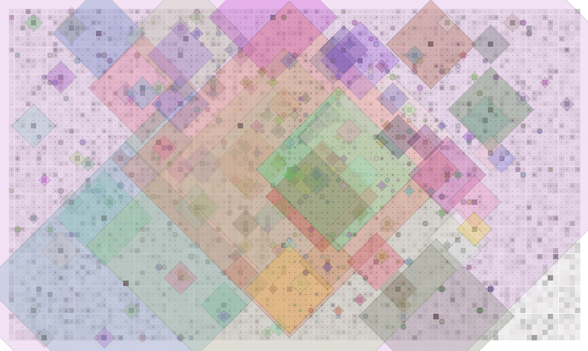 I can't take any credit for the next model - see instead Jeff Steif's survey and references within - but I was experimenting with a programming language called Processing one day and drew some pictures of dynamical percolation.
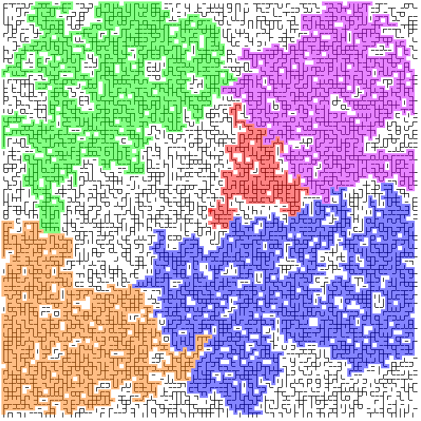
This is critical bond percolation on Z^2 where each bond randomly updates its status at independent exponential times. There are four versions: The following is a two-dimensional version of something that I have starting thinking about in one dimension (on the circle). One-dimensional pictures tend to be less interesting so I drew this instead. (In fact it's not even quite the 2-d equivalent of the 1-d model I have been looking at, but it's similar.) In each time-step each square has a chance to fragment into four smaller squares, or - if there are three other squares of the same size available - to combine with three others to make a bigger square. Every time a fragmentation or coagulation occurs the centres of the newly-created squares are distributed uniformly over the window. Where I say "has a chance", you might like to ask yourself what probabilities one should choose to get interesting questions. Click the image to see the program in action - note that it doesn't start in equilibrium so you have to wait a while for it to get going.
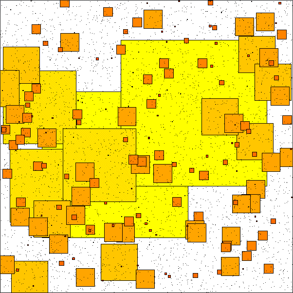 Here is a picture of a branching Brownian motion on a circle (distance from the origin represents time). It's hard to see what's going on - but it's kind of pretty I think.
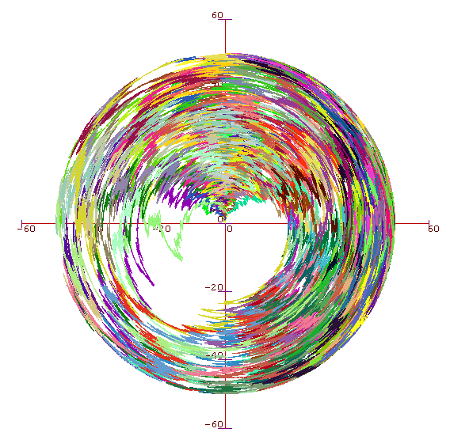 And another picture of BBM on a circle: this time it's in 3D, with the Z-axis representing time. Slightly easier to see what's actually happening, at least to start off with.
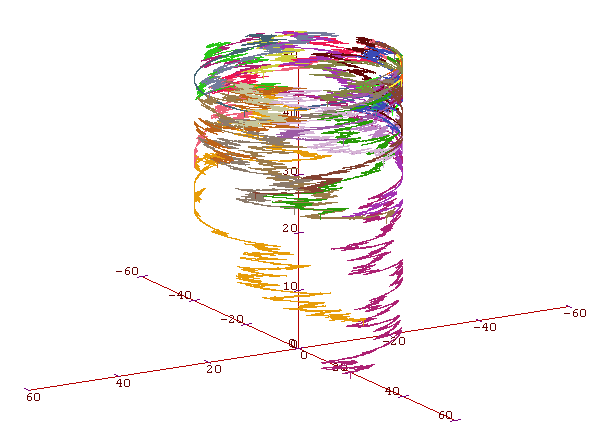 |
{kind=link}
{kind=link}
{kind=link}
{kind=link}
{kind=link}
{kind=link}
{kind=link}